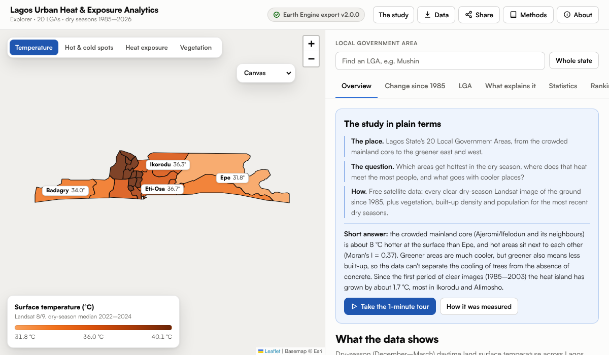

Surface Urban Heat Island in Lagos State, Nigeria
Spatial pattern, population exposure and change from Landsat, 1985–2026
Abstract
The ground in Lagos's crowded inner city is the hottest in the state. Since the first clear satellite images, that heat has spread outwards with the city.
- — °CGap in average surface temperature between the hottest and coolest LGA in the dry season.
- — °CGrowth of the heat island, the city's warmth above the countryside, since the first period of clear images.
- —% to —%Share of Lagos land more than 3 °C warmer than the countryside, then and now.
These are ground-surface temperatures on clear mornings, not the air temperature people feel.
1Introduction
Roads, roofs and paving absorb more sunlight and hold more heat than vegetation does, so cities run warmer than the land around them (Oke, 1982). Satellites measure the temperature of the ground surface across a whole city at once, and have done so since the 1980s (Voogt & Oke, 2003).
Earlier studies found Lagos's surface getting hotter as vegetation was lost (Obiefuna et al., 2021; Guo et al., 2022). This study asks three things at the level of the local government areas (LGAs) that run the city: where is it hottest today, what goes with the heat, and how has the pattern changed?
2Study area
Lagos State lies on the coast of south-west Nigeria, between the Atlantic and the Lagos Lagoon. Its — LGAs range from dense inner-city areas such as Mushin, — km², to large and partly rural Epe, — km².
3Data and methods
| What | Source | Years |
|---|---|---|
| Surface temperature | Landsat 8 and 9; MODIS Terra as a check | 2022–2024 |
| Vegetation (NDVI), built-up density (NDBI) | Sentinel-2 | 2022–2024 |
| Population | WorldPop, 100 m | 2020 |
| Heat island over time | Landsat 4, 5, 7, 8 and 9, every clear dry-season pass | 1985–2026 |
| Built-up land over time | EU Global Human Settlement Layer | 1975–2020 |
All values are dry-season (December to March) averages for each LGA. The heat island is how much warmer an LGA's ground is than nearby countryside, measured on the same satellite morning so the day's weather cancels out:
Countryside: land within — km of the state that is essentially unbuilt. Images with cloud or fog were rejected. Full method and code: repository.
4Results
4.1Land surface temperature
Average dry-season surface temperature runs from — °C in — to — °C in — (Figure 2). Hot LGAs sit next to each other in one block on the mainland, a pattern too strong to be chance (Moran, 1950).
4.2Vegetation and built-up density
The coolest LGAs are the greenest, and the hottest are the most built up (Figure 3). In Lagos the two go together so closely that the data cannot say how much of the cooling comes from vegetation and how much from less concrete.
4.3Spatial clustering and hot spots
A hot-spot test compares each LGA with its neighbours (Getis & Ord, 1992). The mainland LGAs lean hot and the east leans cool, but after allowing for testing — areas at once (Benjamini & Hochberg, 1995), no single LGA stands out (Figure 4). The heat is a broad pattern.
4.4Population exposure
Combining surface temperature with population density puts — at the top (Figure 5). These are the places where the most people live on the hottest ground. It is a ranking for attention, not a measure of health risk.
4.5Change in heat-island intensity
Only — of — Landsat passes since 1985 were clear enough to use, so the record is three periods rather than every year. Across the — LGAs seen clearly in all three, the heat island grew from — °C to — °C (Figure 6), and the share of land more than 3 °C above the countryside rose from —% to —%.
4.6Spatial pattern of change
The largest rises were on the edges of the city, led by — (Figure 7). The inner city was already hot and changed little. LGAs that were built over most warmed most, but that link rests on three of them; without — it disappears.
5Discussion
Lagos's heat follows its buildings. The inner city, built up long ago, is hottest and has stayed so; the growth in heat is where open land has been built over. Vegetation goes with cooler ground, though the data cannot separate its effect from that of less concrete. The LGAs where heat and dense population meet are where cooling measures, such as shade and green space, would reach the most people.
6Limitations
- Ground temperature on clear mornings, not air temperature, and not at night.
- Clear images are rare: the first period rests on — passes, mostly from 2000 to 2003, and none exist from 1992 to 1998.
- Older Landsat satellites passed earlier in the morning, when the heat island is weaker, so part of the change may come from the sensors.
- LGA averages hide differences within each LGA.
- The results are associations, not causes.
7Conclusion
The hottest ground in Lagos is in its dense mainland core, and the heat island has spread outwards as the city has grown. Air-temperature records from weather stations inside and outside the city would be the next check.

Interactive explorer Explore every LGA Switch map layers, play the heat island through the three periods, open any LGA, and compare two side by side. Open the explorer →Data, code and citation
- lagos_uhi_processed.geojsonLGA boundaries and 2022–2024 values
- change_summary.jsonHeat island over time
- lagos_change_scenes.csvEvery satellite pass, used or rejected
- RepositoryEarth Engine export, analysis scripts and tests
How to cite
Oloyede, D. O. (2026). Surface Urban Heat Island in Lagos State, Nigeria: Spatial Pattern, Population Exposure and Change from Landsat, 1985–2026. https://github.com/oloyededavid/Lagos-Urban-Heat-Analytics
A note from me
I set out to answer a simple question: is Lagos getting hotter? I assumed the satellites would just tell me. Mostly, they told me it was cloudy. Of — dry-season passes since 1985, — were clear enough to use, and from 1992 to 1998 the archive holds none at all.
If you know one of these LGAs and something here does not match what you feel on the street, tell me: open an issue on the repository.
David
References
- Benjamini, Y., & Hochberg, Y. (1995). Controlling the false discovery rate: a practical and powerful approach to multiple testing. Journal of the Royal Statistical Society: Series B, 57(1), 289–300. doi:10.1111/j.2517-6161.1995.tb02031.x
- Getis, A., & Ord, J. K. (1992). The analysis of spatial association by use of distance statistics. Geographical Analysis, 24(3), 189–206. doi:10.1111/j.1538-4632.1992.tb00261.x
- Gorelick, N., Hancher, M., Dixon, M., Ilyushchenko, S., Thau, D., & Moore, R. (2017). Google Earth Engine: planetary-scale geospatial analysis for everyone. Remote Sensing of Environment, 202, 18–27. doi:10.1016/j.rse.2017.06.031
- Guo, L., Di, L., Zhang, C., Lin, L., Chen, F., & Molla, A. (2022). Evaluating contributions of urbanization and global climate change to urban land surface temperature change: a case study in Lagos, Nigeria. Scientific Reports, 12, 14168. doi:10.1038/s41598-022-18193-w
- Moran, P. A. P. (1950). Notes on continuous stochastic phenomena. Biometrika, 37(1–2), 17–23. doi:10.1093/biomet/37.1-2.17
- Obiefuna, J. N., Okolie, C. J., Nwilo, P. C., Daramola, O. E., & Isiofia, L. C. (2021). Potential influence of urban sprawl and changing land surface temperature on outdoor thermal comfort in Lagos State, Nigeria. Quaestiones Geographicae, 40(1), 5–23. doi:10.2478/quageo-2021-0001
- Oke, T. R. (1982). The energetic basis of the urban heat island. Quarterly Journal of the Royal Meteorological Society, 108(455), 1–24. doi:10.1002/qj.49710845502
- Voogt, J. A., & Oke, T. R. (2003). Thermal remote sensing of urban climates. Remote Sensing of Environment, 86(3), 370–384. doi:10.1016/S0034-4257(03)00079-8